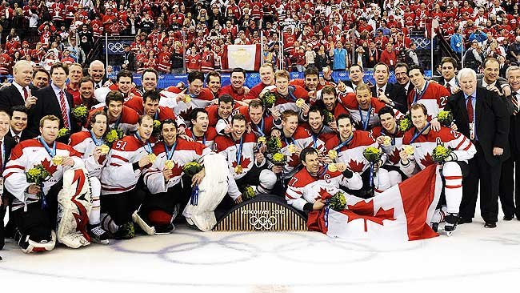

Ice hockey tournaments have been staged at the Olympic Games since 1920. The men's tournament was introduced at the 1920 Summer Olympics and was transferred permanently to the Winter Olympic Games program in 1924, in France. The women's tournament was first held at the 1998 Winter Olympics. The Olympic Games were originally intended for amateur athletes until 1988, and the National Hockey League (NHL) did not allow its players to compete until 1998. From 1924 to 1988, the tournament started with a round-robin series of games and ended with the medal round. Medals were awarded based on points accumulated during that round. The games of the tournament follow the rules of the International Ice Hockey Federation (IIHF), which differ slightly from the rules used in the NHL. The tournament follows the World Anti-Doping Agency's (WADA) rules on performance enhancing drugs and the IIHF maintains a Registered Testing Pool, a list of top players who are subjected to random in-competition and out-of-competition drug tests. Several players have tested positive for banned substances since the 1972 Winter Olympics.
In the men's tournament, Canada was the most successful team of the first three decades, winning six of seven gold medals and later three of five gold medals from 1998 to 2014. Czechoslovakia, Sweden and the United States were also competitive during this period and won multiple medals. Between 1920 and 1968, the Olympic hockey tournament was also counted as the Ice Hockey World Championship for that year. The Soviet Union first participated in 1956 and overtook Canada as the dominant international team, winning seven of the nine tournaments in which they participated. The United States won gold medals in 1960 and in 1980, which included their "Miracle on Ice" upset of the Soviet Union. Canada went 50 years without a gold medal until NHL participation at the Olympic Games began in 1998, for the first time the best players from all participating countries were present allowing for a level playing field. Canada would later go on to win in 2002, and followed it with back-to-back wins in 2010 and 2014 officially reinstating Canada's prior dominance in Olympic hockey. Other nations to win gold include Great Britain in 1936, the Unified Team in 1992, Sweden in 1994 and 2006 and the Czech Republic in 1998. Other medal-winning nations include Switzerland, Germany, Finland and Russia.
In 1986, the International Olympic Committee (IOC) voted to allow all athletes to compete in Olympic Games starting in 1988. The NHL was initially reluctant to allow its players to compete because the Olympics are held in the middle of the NHL season, and the league would have to halt play if many of its players participated. However, NHL players were allowed to compete starting in 1998. The format of the tournament was adjusted to accommodate the NHL schedule; a preliminary round was played without NHL players or the top six teams—Canada, the Czech Republic, Finland, Russia, Sweden and the United States—followed by a final round which included them. The tournament format was changed again in 2006; every team played five preliminary games with the full use of NHL players.